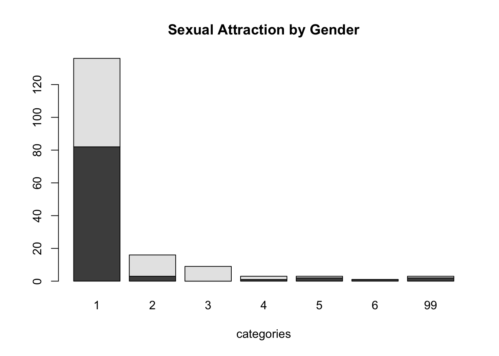
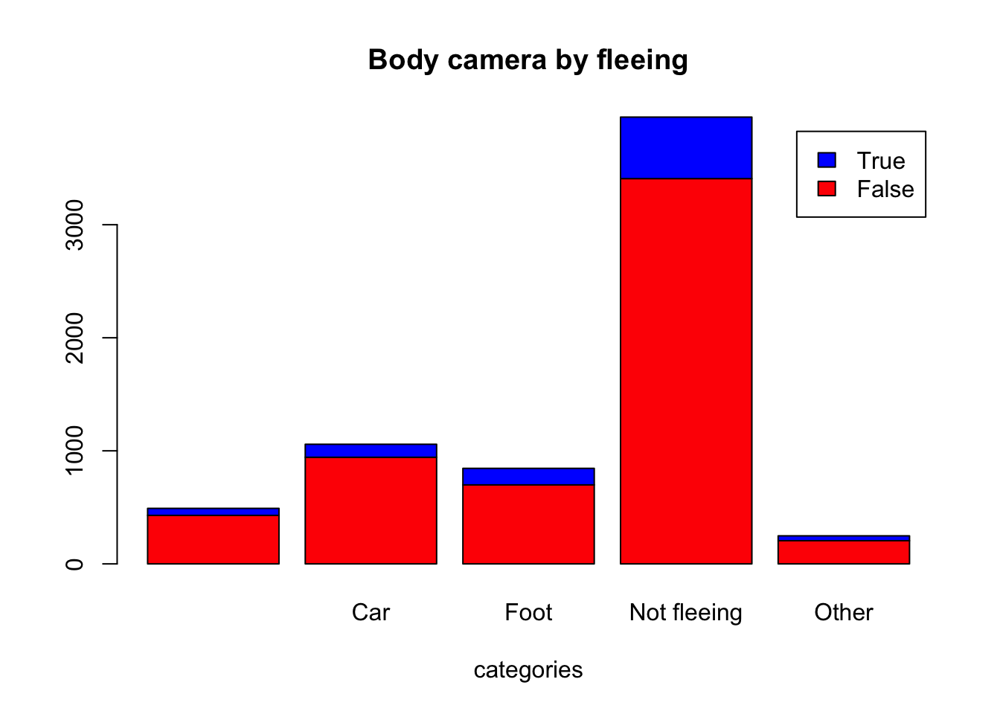
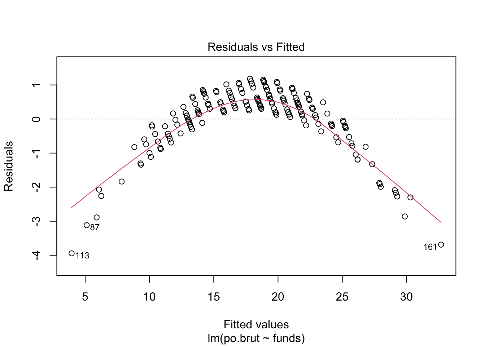

Assignments
Eliza Jane Epstein
10/04/2021
Assignment 1
Collaborators: Carolina Herrera Figueroa, Niko Amber
Problem 1
Install the datasets package on the console below and load the data
dat<-USArrestsLoad the USArrests dataset and rename it dat. Note that this dataset comes with R, in the package datasets, so there’s no need to load data from your computer. Why is it useful to rename the dataset?
Answer: It is useful to rename the data set for convenience and easy accessibility.
USArrests## Murder Assault UrbanPop Rape
## Alabama 13.2 236 58 21.2
## Alaska 10.0 263 48 44.5
## Arizona 8.1 294 80 31.0
## Arkansas 8.8 190 50 19.5
## California 9.0 276 91 40.6
## Colorado 7.9 204 78 38.7
## Connecticut 3.3 110 77 11.1
## Delaware 5.9 238 72 15.8
## Florida 15.4 335 80 31.9
## Georgia 17.4 211 60 25.8
## Hawaii 5.3 46 83 20.2
## Idaho 2.6 120 54 14.2
## Illinois 10.4 249 83 24.0
## Indiana 7.2 113 65 21.0
## Iowa 2.2 56 57 11.3
## Kansas 6.0 115 66 18.0
## Kentucky 9.7 109 52 16.3
## Louisiana 15.4 249 66 22.2
## Maine 2.1 83 51 7.8
## Maryland 11.3 300 67 27.8
## Massachusetts 4.4 149 85 16.3
## Michigan 12.1 255 74 35.1
## Minnesota 2.7 72 66 14.9
## Mississippi 16.1 259 44 17.1
## Missouri 9.0 178 70 28.2
## Montana 6.0 109 53 16.4
## Nebraska 4.3 102 62 16.5
## Nevada 12.2 252 81 46.0
## New Hampshire 2.1 57 56 9.5
## New Jersey 7.4 159 89 18.8
## New Mexico 11.4 285 70 32.1
## New York 11.1 254 86 26.1
## North Carolina 13.0 337 45 16.1
## North Dakota 0.8 45 44 7.3
## Ohio 7.3 120 75 21.4
## Oklahoma 6.6 151 68 20.0
## Oregon 4.9 159 67 29.3
## Pennsylvania 6.3 106 72 14.9
## Rhode Island 3.4 174 87 8.3
## South Carolina 14.4 279 48 22.5
## South Dakota 3.8 86 45 12.8
## Tennessee 13.2 188 59 26.9
## Texas 12.7 201 80 25.5
## Utah 3.2 120 80 22.9
## Vermont 2.2 48 32 11.2
## Virginia 8.5 156 63 20.7
## Washington 4.0 145 73 26.2
## West Virginia 5.7 81 39 9.3
## Wisconsin 2.6 53 66 10.8
## Wyoming 6.8 161 60 15.6dat<-USArrestsProblem 2
List the variables contained in the dataset:
The four variables within the dataset are Murder, Assault, Urbanpop and Rape
Problem 3
What type of variable (from the DVB chapter) is Murder?
Answer: categorical
What R Type of variable is it?
Answer: character
Problem 4
What information is contained in this dataset, in general? What do the numbers mean?
Answer: The data set shows the arrest rate per 100,000 in the US in 1973. The rows show each state and the columns show the type of arrest. Each number shows the amount of arrests of that type within that state per 100,000.
Problem 5
Draw a histogram of Murder with proper labels and title.
I chose to do a bar chart instead due to the categorical nature of the values.
state.names = row.names(USArrests)
barplot(USArrests$Murder, names.arg = state.names, las = 2, ylab = "Arrest rate for Murder per 100,000",
main = "Arrest rate for Murder in the United States in 1973")Problem 6
Please summarize Murder quantitatively. What are its mean and median? What is the difference between mean and median? What is a quartile, and why do you think R gives you the 1st Qu. and 3rd Qu.?
Answer: The mean for murder is 7.788 and the median for murder is 7.250. Mean is the average of the data (that is: if you were to add up all of the values then divide by the amount of values present). Median is the middle value (half of the values are above and half are below). If the data is well distributed, mean and median will be similar or the same, but the major differences occur when there are outliers: mean is impacted by outliers whereas median is not. In this data seet, mean and median appear rather similar. Quartiles are the data broken up into 4 parts. R gives the 1st quartile to give a sense of the values up until 25% of the data and the 3rd quartile to give values up until 75% of the data.
Problem 7
Repeat the same steps you followed for Murder, for the variables Assault and Rape. Now plot all three histograms together. You can do this by using the command par(mfrow=c(3,1)) and then plotting each of the three.
state.names = row.names(USArrests)
barplot(USArrests$Assault, names.arg = state.names, las = 2, ylab = "Arrest rate for assault per 100,000",
main = "Arrest Rate for Assault in the United States in 1973") state.names = row.names(USArrests)
barplot(USArrests$Rape, names.arg = state.names, las = 2, ylab = "Arrest rate for Rape per 100,000",
main = "Arrest Rate for Rape in the United States in 1973") par(mfrow=c(3,1))
state.names = row.names(USArrests)
barplot(USArrests$Murder, names.arg = state.names, las = 2, ylab = "Arrest rate for Murder per 100,000",
main = "Arrest rate for Murder in the United States in 1973")
state.names = row.names(USArrests)
barplot(USArrests$Assault, names.arg = state.names, las = 2, ylab = "Arrest rate for assault per 100,000",
main = "Arrest Rate for Assault in the United States in 1973")
state.names = row.names(USArrests)
barplot(USArrests$Rape, names.arg = state.names, las = 2, ylab = "Arrest rate for Rape per 100,000",
main = "Arrest Rate for Rape in the United States in 1973")What does the command par do, in your own words (you can look this up by asking R ?par)?
Answer: Command par allows for multiple graphs to be plotted together. This command makes this possible by defining parameters.
What can you learn from plotting the histograms together?
Answer: By plotting the histograms together it allows us to visually compare the rates for each. While it is useful to compare the numbers when looking at the table, plotting the values together allows for visual comparison.
Problem 8
What does the given code do? Explain what each line is doing.
Answer: This code creates a heat map of murders in the US. That is, this is a map of the country with darker shades of blue signifying higher murder rates and lighter shades of blue portraying lower murder rates. The first line tells R that you will be making a heat map, arranging by state and filling with arrests for murder rates. The next line sets up the map itself separating by state and the final line expands the range
\[\\[2in]\]
Assignment 2
Collaborators: Carolina Herrera Figueroa, Niko Amber
Problem 1: Load data
Set your working directory to the folder where you downloaded the data.
setwd("/Users/elizaepstein/Desktop/testgithub/ElizalearnR")Read the data
dat <- read.csv(file = 'dat.nsduh.small.1.csv')What are the dimensions of the dataset?
names(dat)## [1] "mjage" "cigage" "iralcage" "age2" "sexatract" "speakengl"
## [7] "irsex"nrow(dat)## [1] 171ncol(dat) ## [1] 7Answer: There are 7 columns and 171 rows.
Problem 2: Variables
Describe the variables in the dataset.
Answer: The variables in this dataset are the age that an individual began smoking cigarettes, the age they began drinking alcohol, their age, their sexual attraction, whether they speak english and their sex.
What is this dataset about? Who collected the data, what kind of sample is it, and what was the purpose of generating the data?
Answer: This data set shows the trends in substance abuse by age, sex, sexual attraction and their english language proficiency. This data was collected through the National Survey of Drug Use and Health; it is a sample of the first 1,000 individuals of the survey. The purpose of this data was to analyze trends in substance abuse. While it is not stated, these trends may be used to further understand which individuals to target for treatment.
Problem 3: Age and gender
What is the age distribution of the sample like? Make sure you read the codebook to know what the variable values mean.
Answer: The age distribution starts from 12 and goes to 65+. The codebook explains how each age is labelled a number, so “17” represents individuals who are 65 or older.
Do you think this age distribution representative of the US population? Why or why not?
Answer: I do believe that the age distribution is representative of the US population because it covers all ages twelve and above. Due to the fact that this survey is questioning the ages someone began using substances, it is reasonable that it begins at 12.
Is the sample balanced in terms of gender? If not, are there more females or males?
Answer: I believe the sample is mostly balanced in terms of gender, but there are slightly more females. As seen in the codebook, the sample consists of 47.72% male and 52.28% females.
Use this code to draw a stacked bar plot to view the relationship between sex and age. What can you conclude from this plot?
tab.agesex <- table(dat$irsex, dat$age2)
barplot(tab.agesex,
main = "Stacked barchart",
xlab = "Age category", ylab = "Frequency",
legend.text = rownames(tab.agesex),
beside = FALSE) # Stacked bars (default)Answer: This plot shows the frequency of sex of the respondent by age. For most of the younger age groups there seems to be more female respondents then the group between eight to twelve show more male respondents. Group 15 had the most respondents and seems to show a pretty even split between gendeers.
Problem 4: Substance use
For which of the three substances included in the dataset (marijuana, alcohol, and cigarettes) do individuals tend to use the substance earlier?
Answer: Of the three substances included individuals tend to use alcohol the youngest.
Problem 5: Sexual attraction
What does the distribution of sexual attraction look like? Is this what you expected?
counts<- table(dat$sexatract)
barplot(counts,main= "Sexual Attraction", xlab="categories")Answer: The distribution of sexual attraction is heavily weighted towards number 1 which indicated heterosexuality. I was not surprised by there being the greatest weight on heterosexuality, but I was slightly surprised quite how extreme the difference is.
What is the distribution of sexual attraction by gender?
counts <- table(dat$irsex, dat$sexatract)
barplot(counts,main= "Sexual Attraction by Gender", xlab="categories")
barplot(counts, col=c("red", "blue"), legend=TRUE)Answer: The distribution of sexual attraction by gender is intriguing to me because the first group (strongly heterosexual) appers mostly weighted towards males. The group showing bisexuality is heavily weighted towards females. The group identifying as homosexual is mostly male. The groups not knowing or leaving blank are all female and the group skipping the question is mostly male.
Problem 6: English speaking
What does the distribution of English speaking look like in the sample? Is this what you might expect for a random sample of the US population?
counts<- table(dat$speakengl)
barplot(counts,main= "English Language Proficiency", xlab="categories")Answer: The distribution of english speaking proficiency is heavily weighted towards the number 1 which indicates being able to speak english very well. I was not surpsied by this within the sample
Are there more English speaker females or males?
counts <- table(dat$irsex, dat$speakengl)
barplot(counts, col=c("purple", "blue"), legend=TRUE)Answer: For those that speak english very well there is a somewhat even split between the sexes, but there are overall more females. That said, there are more males than females who answered that they speak english “well”
Exam 1
setwd("/Users/elizaepstein/Desktop/testgithub/ElizalearnR/exams")
dat <- read.csv(file='fatal-police-shootings-data.csv')Problem 1 (10 points)
- Describe the dataset. This is the source: https://github.com/washingtonpost/data-police-shootings . Write two sentences (max.) about this.
This dataset describes fatal police shootings since 2015 including information about the victim such as race, gender, whether they were armed, the city and signs of mental illenss.
- How many observations are there in the data frame?
summary(dat)## id name date manner_of_death
## Min. : 3 Length:6594 Length:6594 Length:6594
## 1st Qu.:1860 Class :character Class :character Class :character
## Median :3662 Mode :character Mode :character Mode :character
## Mean :3651
## 3rd Qu.:5437
## Max. :7194
##
## armed age gender race
## Length:6594 Min. : 6.00 Length:6594 Length:6594
## Class :character 1st Qu.:27.00 Class :character Class :character
## Mode :character Median :35.00 Mode :character Mode :character
## Mean :37.12
## 3rd Qu.:45.00
## Max. :91.00
## NA's :308
## city state signs_of_mental_illness
## Length:6594 Length:6594 Length:6594
## Class :character Class :character Class :character
## Mode :character Mode :character Mode :character
##
##
##
##
## threat_level flee body_camera longitude
## Length:6594 Length:6594 Length:6594 Min. :-160.01
## Class :character Class :character Class :character 1st Qu.:-112.09
## Mode :character Mode :character Mode :character Median : -94.31
## Mean : -97.16
## 3rd Qu.: -83.12
## Max. : -67.87
## NA's :314
## latitude is_geocoding_exact
## Min. :19.50 Length:6594
## 1st Qu.:33.48 Class :character
## Median :36.09 Mode :character
## Mean :36.66
## 3rd Qu.:40.00
## Max. :71.30
## NA's :314ncol(dat)## [1] 17nrow(dat)## [1] 6594There are 6594 cases observed with 17 categories used to describe each case.
- Look at the names of the variables in the data frame. Describe what “body_camera”, “flee”, and “armed” represent, according to the codebook. Again, only write one sentence (max) per variable.
body camera: This tells whether the police officer was wearing a body camera (as true or false)
flee: This tells whether the victim attempted to flee and how (by foot, by car or not fleeing)
armed: this tells whether the victim was armed with a weapon and what type (gun, shovel, toy weapon etc. )
- What are three weapons that you are surprised to find in the “armed” variable? Make a table of the values in “armed” to see the options.
table(dat$armed)##
## air conditioner
## 207 1
## air pistol Airsoft pistol
## 1 3
## ax barstool
## 24 1
## baseball bat baseball bat and bottle
## 20 1
## baseball bat and fireplace poker baseball bat and knife
## 1 1
## baton BB gun
## 6 15
## BB gun and vehicle bean-bag gun
## 1 1
## beer bottle binoculars
## 3 1
## blunt object bottle
## 5 1
## bow and arrow box cutter
## 1 13
## brick car, knife and mace
## 2 1
## carjack chain
## 1 3
## chain saw chainsaw
## 2 1
## chair claimed to be armed
## 4 1
## contractor's level cordless drill
## 1 1
## crossbow crowbar
## 9 5
## fireworks flagpole
## 1 1
## flashlight garden tool
## 2 2
## glass shard grenade
## 4 1
## gun gun and car
## 3798 12
## gun and knife gun and machete
## 22 3
## gun and sword gun and vehicle
## 1 17
## guns and explosives hammer
## 3 18
## hand torch hatchet
## 1 14
## hatchet and gun ice pick
## 2 1
## incendiary device knife
## 2 955
## knife and vehicle lawn mower blade
## 1 2
## machete machete and gun
## 51 1
## meat cleaver metal hand tool
## 6 2
## metal object metal pipe
## 5 16
## metal pole metal rake
## 4 1
## metal stick microphone
## 3 1
## motorcycle nail gun
## 1 1
## oar pellet gun
## 1 3
## pen pepper spray
## 1 2
## pick-axe piece of wood
## 4 7
## pipe pitchfork
## 7 2
## pole pole and knife
## 3 2
## railroad spikes rock
## 1 7
## samurai sword scissors
## 4 9
## screwdriver sharp object
## 16 14
## shovel spear
## 7 2
## stapler straight edge razor
## 1 5
## sword Taser
## 23 34
## tire iron toy weapon
## 4 226
## unarmed undetermined
## 421 188
## unknown weapon vehicle
## 82 213
## vehicle and gun vehicle and machete
## 8 1
## walking stick wasp spray
## 1 1
## wrench
## 1I am surprised to see air conditioner, flashlight and microphone listed as weapons (among other peculiar options).
Problem 2 (10 points)
- Describe the age distribution of the sample. Is this what you would expect to see?
counts <- table(dat$age)
barplot(counts, col=c("pink"), legend=TRUE)summary(dat$age)## Min. 1st Qu. Median Mean 3rd Qu. Max. NA's
## 6.00 27.00 35.00 37.12 45.00 91.00 308The ages range from 6 (minimum) to 91 (maximum) with a mean of 37.12 and a median of 35. The mean and median are what I would expect to see, but I was surpised by how high and low the data gets: I would not expect to see a 6 year old or a 91 year old among this group. It is also crucial to note that there are 308 values listed as NA.
- To understand the center of the age distribution, would you use a mean or a median, and why? Find the one you picked.
To understand the “center” of the age distribution, I would choose median because that is the middle value which has half above and half below. Unlike mean, median is not affected by outliers. The median is 35.
- Describe the gender distribution of the sample. Do you find this surprising?
counts <- table(dat$gender)
barplot(counts, col=c("yellow","gray"), legend=TRUE)table(dat$gender)##
## F M
## 3 293 6298There are significantly more males than females, as shown in the bar chart.The table shows that there are 293 females and 6298 males. I am not surprised by this given that the vast majority of fatal police shootings that we hear about on the news are male. That said, this is slightly more extreme than I was expecting.
Problem 3 (10 points)
- How many police officers had a body camera, according to news reports? What proportion is this of all the incidents in the data? Are you surprised that it is so high or low?
table(dat$body_camera)##
## False True
## 5684 910Of the 6594 listed, 910 police officers had body cameras. This is 13.8% of all listed. This is much lower than I would hope, but I am not surprised by this value.
- In how many of the incidents was the victim fleeing? What proportion is this of the total number of incidents in the data? Is this what you would expect?
table(dat$flee)##
## Car Foot Not fleeing Other
## 491 1058 845 3952 248Between fleeing by car or by foot, there are 1903 victims who fled. Excluding the missing values and the “other” there are 5855 reported values which gave clear answers or fleeing or not. Of the 5855 reported cases, the amount who fled make up 35.5% of the victims. This is lower than I would expect. The left most column in the table shows the amount of missing values: 491. The right most column shows “other”: 248. That said, when analyzing fleeing vs not fleeing, I felt it was most useful to look at the 5855 cases who either reported “not fleeing” or reported the mode of fleeing “car” or “foot”.
Problem 4 (10 points) - Answer only one of these (a or b).
- Describe the relationship between the variables “body camera” and “flee” using a stacked barplot. What can you conclude from this relationship?
Hint 1: The categories along the x-axis are the options for “flee”, each bar contains information about whether the police officer had a body camera (vertically), and the height along the y-axis shows the frequency of that category).
Hint 2: Also, if you are unsure about the syntax for barplot, run ?barplot in R and see some examples at the bottom of the documentation. This is usually a good way to look up the syntax of R code. You can also Google it.
counts <- table(dat$body_camera, dat$flee)
barplot(counts,main= "Body camera by fleeing", xlab="categories", col=c("red", "blue"), legend=TRUE)
Of the groups for fleeing, the largest proportion of cases in which the police were wearing body cameras falls under the case of the victim not fleeing. Each of the groups shows significantly more cases in which the police officer was not wearing a body camera. The left most bar shows missing values. While it is intriguing to view that the largest proportion of cases in which police officers were wearing body cameras falls under the case in which the victim was not fleeing, it is crucial to note that this cannot be seen as a causation (it cannot be said that the victim not fleeing means that the police officer will wear a camera)
Extra credit (10 points)
- What does this code tell us?
mydates <- as.Date(dat$date)
head(mydates)
(mydates[length(mydates)] - mydates[1])This code is telling us the spread of the dates: showing that the difference between the first date listed and the last date listed is 2458 days.
- On Friday, a new report was published that was described as follows by The Guardian: “More than half of US police killings are mislabelled or not reported, study finds.” Without reading this article now (due to limited time), why do you think police killings might be mislabelled or underreported?
I believe that police killings may be mislabelled or underreported due to police departments protecting themselves. As shown in the data, a very low percentage are wearing body cameras during incidences, so police officers can easily get away with mislabelling these cases.
- Regarding missing values in problem 4, do you see any? If so, do you think that’s all that’s missing from the data?
There are 491 missing values in problem 4. I do not believe that is all that is missing from the data.
Assignment 3
Collaborators: Carolina Herrera Figueroa
This assignment is due on Canvas on Wednesday 10/27/2021 before class, at 10:15 am. Include the name of anyone with whom you collaborated at the top of the assignment.
Submit your responses as either an HTML file or a PDF file on Canvas. Also, please upload it to your website.
Save the file (found on Canvas) crime_simple.txt to the same folder as this file (your Rmd file for Assignment 3).
Load the data.
library(readr)
library(knitr)
dat.crime <- read_delim("crime_simple.txt", delim = "\t")## Rows: 47 Columns: 14## ── Column specification ────────────────────────────────────────────────────────
## Delimiter: "\t"
## dbl (14): R, Age, S, Ed, Ex0, Ex1, LF, M, N, NW, U1, U2, W, X##
## ℹ Use `spec()` to retrieve the full column specification for this data.
## ℹ Specify the column types or set `show_col_types = FALSE` to quiet this message.This is a dataset from a textbook by Brian S. Everitt about crime in the US in 1960. The data originate from the Uniform Crime Report of the FBI and other government sources. The data for 47 states of the USA are given.
Here is the codebook:
R: Crime rate: # of offenses reported to police per million population
Age: The number of males of age 14-24 per 1000 population
S: Indicator variable for Southern states (0 = No, 1 = Yes)
Ed: Mean of years of schooling x 10 for persons of age 25 or older
Ex0: 1960 per capita expenditure on police by state and local government
Ex1: 1959 per capita expenditure on police by state and local government
LF: Labor force participation rate per 1000 civilian urban males age 14-24
M: The number of males per 1000 females
N: State population size in hundred thousands
NW: The number of non-whites per 1000 population
U1: Unemployment rate of urban males per 1000 of age 14-24
U2: Unemployment rate of urban males per 1000 of age 35-39
W: Median value of transferable goods and assets or family income in tens of $
X: The number of families per 1000 earning below 1/2 the median income
We are interested in checking whether the reported crime rate (# of offenses reported to police per million population) and the average education (mean number of years of schooling for persons of age 25 or older) are related.
##1. How many observations are there in the dataset? To what does each observation correspond?
nrow(dat.crime)## [1] 47ncol(dat.crime)## [1] 14head(dat.crime)## # A tibble: 6 × 14
## R Age S Ed Ex0 Ex1 LF M N NW U1 U2 W
## <dbl> <dbl> <dbl> <dbl> <dbl> <dbl> <dbl> <dbl> <dbl> <dbl> <dbl> <dbl> <dbl>
## 1 79.1 151 1 91 58 56 510 950 33 301 108 41 394
## 2 164. 143 0 113 103 95 583 1012 13 102 96 36 557
## 3 57.8 142 1 89 45 44 533 969 18 219 94 33 318
## 4 197. 136 0 121 149 141 577 994 157 80 102 39 673
## 5 123. 141 0 121 109 101 591 985 18 30 91 20 578
## 6 68.2 121 0 110 118 115 547 964 25 44 84 29 689
## # … with 1 more variable: X <dbl>ANSWER: There are 14 columns and 47 rows, with a total of 658 observations in the data set. Each row represents a state, with columns indicating statistics such as number of offenses reported to police per million, unemployment rates, expenditure of police etc.
##2. Draw a scatterplot of the two variables. Calculate the correlation between the two variables. Can you come up with an explanation for this relationship?
library(datasets)
plot(dat.crime$Ed, dat.crime$R, main="Relationship between Reported Crime Rate and Level of Education",
xlab="Level of Education", ylab="Reported Crime Rate")cor(dat.crime$Ed, dat.crime$R)## [1] 0.3228349ANSWER: The correlation between the two variables is 0.3228. Given that correlations range from -1 to 1 this shows a rather small positive correlation. That is, there is a slightly positive relationship between the level of education and the number of reported crimes. It is reasonable that this number is relatively low though because this relationship is not a direct causation.
##3. Regress reported crime rate (y) on average education (x) and call this linear model crime.lm and write the summary of the regression by using this code, which makes it look a little nicer {r, eval=FALSE} kable(summary(crime.lm)$coef, digits = 2).
reg.output <- lm(formula = R ~ Ed, data=dat.crime)summary(reg.output)##4. Are the four assumptions of linear regression satisfied? To answer this, draw the relevant plots. (Write a maximum of one sentence per assumption.)
plot(dat.crime$Ed, reg.output$residuals, ylim=c(-15,15), main="Residuals vs. x", xlab="x, Average Education", ylab="Residuals")
abline(h = 0, lty="dashed")ANSWER: For residuals vs X, if the linearity assumption is satisfied there should be no pattern around the horizontal line, so it can be said that for this data set the linearity assumption holds true.
plot(reg.output, which=1)
ANSWER: Given that neither the residuals vs X nor the residuals vs fitted show clear patterns, it can be said that the independence assumption is satisfied.
plot(reg.output, which=3)ANSWER: The third assumption, equal variance, holds true because there does not seem to be a trend in the red line: it appears mostly flat.
plot(reg.output, which=2)ANSWER: The normal QQ plot shows that the last assumption is not fully satisfied because while the points appear gathered on the line in the middle range, the values less than -1 and greater than 1 appear further from the line than ideal.
##5. Is the relationship between reported crime and average education statistically significant? Report the estimated coefficient of the slope, the standard error, and the p-value. What does it mean for the relationship to be statistically significant?
ANSWER: The relationship between reported crime and average education is statistically significant given that the p-value is less than .05. The estimated coefficient of the slope is 1.11. The Standard error is 0.4787 and the p value is 0.0288. T tests are used to determine whether a relationship between two values is due to chance/random or if it is a true relationship. To be statistically significant means that the relationship is real and not due to chance. The null hypothesis can be rejected.
##6. How are reported crime and average education related? In other words, for every unit increase in average education, how does reported crime rate change (per million) per state?
ANSWER: Given the slope of 1.116, for every unit increase in education, reported crime rate increases by 1.116 reports per million per state.
##7. Can you conclude that if individuals were to receive more education, then crime will be reported more often? Why or why not?
ANSWER: It cannot be concluded that if individuals were to reveive more education then crime will be reported more often. Using this one data set does not mean that the results are generalizable. While this data may support the hypothesis that when individuals receive more education more crime will be reported, it cannot be used to full determine a causation.
Exam 2
Create a folder in your computer (a good place would be under Crim 250, Exams).
Download the dataset from the Canvas website (sim.data.csv) onto that folder, and save your Exam 2.Rmd file in the same folder.
Data description: This dataset provides (simulated) data about 200 police departments in one year. It contains information about the funding received by the department as well as incidents of police brutality. Suppose this dataset (sim.data.csv) was collected by researchers to answer this question: “Does having more funding in a police department lead to fewer incidents of police brutality?”
Codebook:
- funds: How much funding the police department received in that year in millions of dollars.
- po.brut: How many incidents of police brutality were reported by the department that year.
- po.dept.code: Police department code
Problem 1: EDA (10 points)
Describe the dataset and variables. Perform exploratory data analysis for the two variables of interest: funds and po.brut.
dat <- read.csv(file = 'sim.data.csv')
summary(dat)## po.dept.code funds po.brut
## Min. : 1.00 Min. :21.40 Min. : 0.00
## 1st Qu.: 50.75 1st Qu.:51.67 1st Qu.:14.00
## Median :100.50 Median :59.75 Median :19.00
## Mean :100.50 Mean :61.04 Mean :18.14
## 3rd Qu.:150.25 3rd Qu.:72.17 3rd Qu.:22.00
## Max. :200.00 Max. :99.70 Max. :29.00This simulated data set describes police departments funding (in millions of dollars) as well as number of cases of police brutality. The minimum amount of funding (of the departments included) is 21.4 million dollars and the maximum is 99.70 million with a mean of 61.04 million. The minimum number of incidents police brutality is 0 and the maximum is 29, with a mean of 18.14. There is a scatterplot to show a visual representation of this data included in problem 2c.
Problem 2: Linear regression (30 points)
- Perform a simple linear regression to answer the question of interest. To do this, name your linear model “reg.output” and write the summary of the regression by using “summary(reg.output)”.
reg.output <- lm(formula= po.brut~funds, data = dat)
summary (reg.output)##
## Call:
## lm(formula = po.brut ~ funds, data = dat)
##
## Residuals:
## Min 1Q Median 3Q Max
## -3.9433 -0.2233 0.2544 0.5952 1.1803
##
## Coefficients:
## Estimate Std. Error t value Pr(>|t|)
## (Intercept) 40.543069 0.282503 143.51 <2e-16 ***
## funds -0.367099 0.004496 -81.64 <2e-16 ***
## ---
## Signif. codes: 0 '***' 0.001 '**' 0.01 '*' 0.05 '.' 0.1 ' ' 1
##
## Residual standard error: 0.9464 on 198 degrees of freedom
## Multiple R-squared: 0.9712, Adjusted R-squared: 0.971
## F-statistic: 6666 on 1 and 198 DF, p-value: < 2.2e-16cor(dat$funds, dat$po.brut)## [1] -0.9854706Answer: In attempting to answer the question of whether increased funding leads to fewer cases of police brutality a linear regression model was run. The funding was made as the x axis with incidents of police brutality as the Y. The correlation value is -0.985 which is a strong negative correlation.
- Report the estimated coefficient, standard error, and p-value of the slope. Is the relationship between funds and incidents statistically significant? Explain.
The slope for this data is -3.671e-01 meaning as funding increases the line representing police brutality does show a decreasing slope. The standard error is 4.49e-03. The P value is 2.2e-16 which is much lower than 0.05 so a statistically significant difference is shown. The P value is used to indicate whether the relationship between these two groups is due to chance or whether the change in one is related to the change in another. This p value shows that the data are related and that the change in incidents of police brutality is related to the change in funding. That is, we can reject the null.
- Draw a scatterplot of po.brut (y-axis) and funds (x-axis). Right below your plot command, use abline to draw the fitted regression line, like this:
plot(dat$funds, dat$po.brut, main = "Scatterplot comparing Police Funding and Incidents of Police Brutality" )
abline(reg.output, col = "red", lwd=2)Does the line look like a good fit? Why or why not?
Overall the line generally looks like a good fit, but when examining closely, it does appear to have issues on the ends. Ideally, the red line would run through the data points, but that does not appear to be the case. On the ends the points seem to be to the left of the line and in the middle the points appear to be to the right of the line. Overall there is more of a curve to the line than ideal.
- Are the four assumptions of linear regression satisfied? To answer this, draw the relevant plots. (Write a maximum of one sentence per assumption.) If not, what might you try to do to improve this (if you had more time)?
plot(dat$funds, reg.output$residuals, ylim=c(-15,15), main="Residuals vs. x", xlab="Police Department Funding", ylab="Residuals")
abline(h = 0, lty="dashed")ANSWER: For residuals vs X, if the linearity assumption is satisfied there should be no pattern around the horizontal line, so it can not be said that for this data set the linearity assumption holds true; this is a pattern.
plot(reg.output, which=1)
ANSWER: Given that the residuals vs fitted seems to show a curvature, it cannot be said that the independence assumption is true.
plot(reg.output, which=3)ANSWER: The third assumption, equal variance, is not satisfied because the line is not mostly flat; there appears to be curvature.
plot(reg.output, which=2)The normal QQ plot shows that the last assumption is not fully satisfied because while the points appear gathered on the line in the middle range, the values less than -1 and greater than 1 appear further from the line than ideal.
- Answer the question of interest based on your analysis.
Within this data set it does appear that as the funding increases, the incidents of police brutality are decreasing. The P value indicates that there is statistical significance and that this change is not merely due to chance. That said, while this data may support the idea that increased funding may lead to decreased incidents of police brutality, this one simulated data set of 200 departments cannot be used to make a general conclusion. Furthermore, given that the assumptions are not satisfied, there seem to be issues in this regression. That is, overall it cannot be concluded that an increase in funding will lead to a decrease in police brutality.
Problem 3: Data ethics (10 points)
Describe the dataset. Considering our lecture on data ethics, what concerns do you have about the dataset? Once you perform your analysis to answer the question of interest using this dataset, what concerns might you have about the results?
Following the lecture on data ethics, there are certain aspects of the data set that do not worry me ethically and others that do. For example, two major concerns in terms of ethics are privacy (individual) and confidentiality (data). This data does not release any privatized information about the incidents of police brutality so I believe it is ethically satisfied in that way.It would concern me if it were collected with names of victims. That said, the part of this that rankles my ethics is the possibility of this data being used to make conclusions about this issue. This sample size of 200 police departments cannot be used to make generalized assumptions and imply that police departments should receive more funding. First off, the assumptions do not all seem to be satisfied, so there are issues with this correlation. Furthermore, this notes situations of reported cases of police brutality, so there may be MANY incidents of police brutality that are not accounted for. In terms of data collection, I would be concerned in terms of how the reports were made: if the police departments were reporting the data themselves they would want to show both lower incidents of police brutality but also they would want this correlation to be true in order to recieve more funding. For that reason, I would be worried about the accuracy of the collection.
Assignment 4
install.packages(“tidyverse”) library(tidyverse)
this allows us to load the data